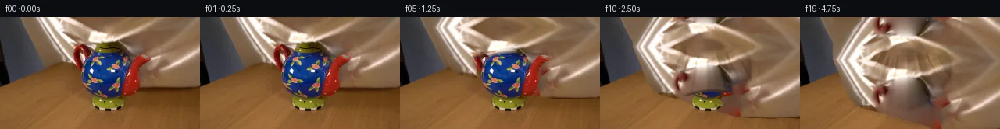

![首帧]()

Round 00
2026-11-05T17:19:01.680179+00:00像素候选变化代码 +282/−0inspection 更新
pixels 4c64f053cd067122 · code 1aaa1d8ac810ded4
查看本轮 generate.py 真实 diff
--- previous/generate.py
+++ current/generate.py
@@ -0,0 +1,282 @@
+"""Deterministic photographed-texture cloth continuation, using local pixels only."""
+from pathlib import Path
+import json
+import math
+
+import numpy as np
+from PIL import Image, ImageDraw
+from scipy.ndimage import gaussian_filter, map_coordinates, distance_transform_edt
+from scipy.interpolate import PchipInterpolator
+from scipy.sparse import coo_matrix
+from scipy.sparse.linalg import spsolve
+
+from artifact_io import save
+
+
+ROOT = Path(__file__).resolve().parent
+H, W = 144, 256
+Y, X = np.mgrid[:H, :W].astype(np.float64)
+SOURCE = np.asarray(Image.open(ROOT / 'first_frame.png').convert('RGB'))
+
+
+def smooth(a, b, value):
+ q = np.clip((value-a)/(b-a), 0, 1)
+ return q*q*(3-2*q)
+
+
+def polygon(points):
+ scale = 4
+ im = Image.new('L', (W*scale, H*scale))
+ ImageDraw.Draw(im).polygon([(round(x*scale), round(y*scale)) for x, y in points], fill=255)
+ return np.asarray(im.resize((W, H), Image.Resampling.LANCZOS), dtype=float)/255
+
+
+def setup():
+ body = polygon([
+ (118, 43), (117, 40), (119, 36), (124, 33), (127, 31),
+ (141, 31), (149, 33), (153, 36), (155, 41), (157, 44),
+ (162, 51), (166, 61), (169, 72), (169, 83), (165, 94),
+ (156, 103), (154, 107), (157, 109), (156, 114), (151, 118),
+ (137, 121), (123, 119), (118, 115), (116, 109), (119, 105),
+ (116, 100), (110, 94), (105, 87), (102, 77), (102, 65),
+ (104, 56), (110, 49), (114, 45)
+ ])
+ handle = polygon([
+ (110, 48), (112, 42), (109, 37), (104, 34), (99, 34),
+ (95, 37), (93, 42), (93, 48), (95, 56), (98, 62),
+ (99, 67), (98, 71), (102, 77), (107, 82), (111, 79),
+ (112, 73), (108, 66), (107, 60), (110, 53)
+ ])
+ hole = polygon([(100, 41), (104, 40), (107, 43), (108, 48),
+ (106, 54), (103, 58), (101, 53), (99, 47)])
+ handle *= 1-hole
+ spout = polygon([
+ (155, 90), (159, 77), (166, 64), (171, 57), (176, 51),
+ (181, 48), (185, 48), (190, 49), (194, 51), (192, 54),
+ (186, 57), (182, 60), (179, 67), (178, 77), (176, 87),
+ (173, 96), (167, 102), (158, 103), (154, 99)
+ ])
+ pot = np.maximum.reduce([body, handle, spout])
+
+ # The measured lower edge also defines the left edge of this hanging sheet.
+ edge_x = np.array([40, 42, 48, 54, 61, 69, 79, 90, 103, 118,
+ 138, 158, 178, 197, 220, 240, 256])
+ edge_y = np.array([-10, 0, 14, 30, 47, 57, 62, 63, 66, 73,
+ 80, 85, 88, 91, 92, 91, 90])
+ hem0 = PchipInterpolator(edge_x, edge_y, extrapolate=True)(X)
+ cloth0 = (X >= 42) & (Y <= hem0)
+ # A plate containing only the photographed silk is formed by harmonic
+ # interpolation through ceramic occlusions, followed by texture extension.
+ known = cloth0 & (pot < .03)
+ invalid = ~known
+ ids = -np.ones((H, W), dtype=np.int32)
+ ids[invalid] = np.arange(invalid.sum())
+ rows, cols, vals = [], [], []
+ rhs = np.zeros((invalid.sum(), 3), dtype=float)
+ iy, ix = np.where(invalid)
+ for dy, dx in [(0, -1), (0, 1), (-1, 0), (1, 0)]:
+ ny = np.clip(iy+dy, 0, H-1)
+ nx = np.clip(ix+dx, 0, W-1)
+ valid_neighbor = (ny != iy) | (nx != ix)
+ i = ids[iy[valid_neighbor], ix[valid_neighbor]]
+ j = ids[ny[valid_neighbor], nx[valid_neighbor]]
+ rows.extend(i.tolist()); cols.extend(i.tolist())
+ vals.extend(np.ones(len(i)).tolist())
+ unknown_neighbor = j >= 0
+ rows.extend(i[unknown_neighbor].tolist())
+ cols.extend(j[unknown_neighbor].tolist())
… diff truncated; 195 more lines …